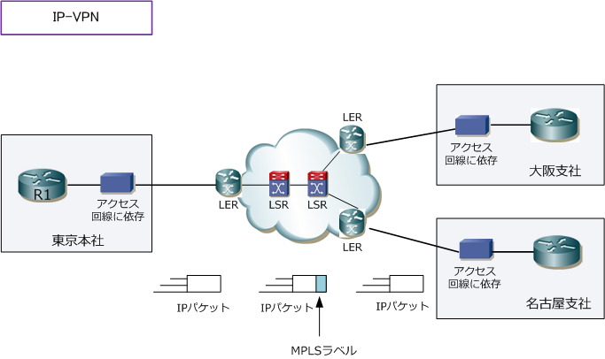
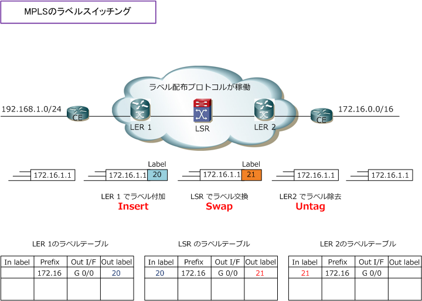
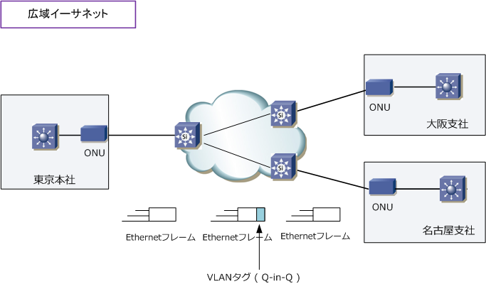
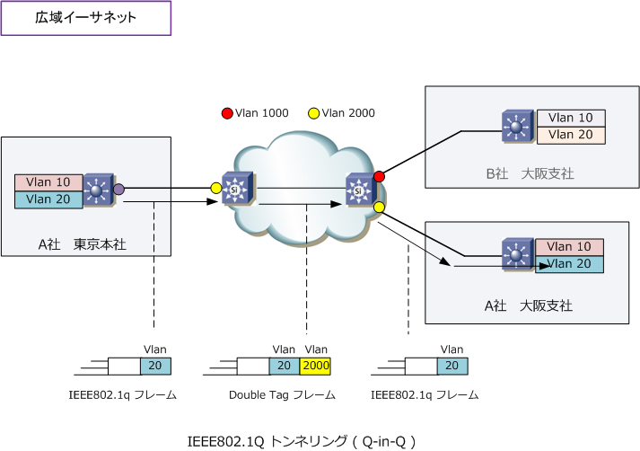

WAN - IP-VPN / Wide Ethernet
WANの回線サービス - IP-VPN
IP-VPNは現在企業で最も利用されているWANサービスです。IP-VPNはキャリア網のIPネットワークを 企業（利用者）で共有して、MPLS（Multi-Protocol Label Switching）により企業ごとのネットワーク を仮想的に分離しています。フレームリレーやATMのように利用者で共有の網を使用するという考え方は 変わりありませんが、キャリア網内のバックボーンが圧倒的な帯域であるため網での輻輳は発生しません。 ※ IP-VPNの場合、L3層の使用できるプロトコルがIPに限定されていますが、今日の企業NWではIPの使用以外は先ずないです。

IP-VPNのWANサービスが、MPLS-VPNという高度な技術を利用しているとはいえ、利用者としてMPLSを 意識する必要はなく、企業側のルータではキャリア側のルータへデフォルトルートを設定するか、BGPで ダイナミックルーティングプロトコルを起動させるだけです。後は、キャリア網でMPLSで適正にラベルが つけられてIPパケットが転送され、企業側のルータへのパケットを送出時にはMPLSラベルが外されます。 MPLSラベルにより通信したい拠点へトラフィックが転送でき、他企業の通信トラフィックが混在しません。
※ IP-VPNでは、キャリア側のルータをPE (Provider Edge) といい、企業側のルータをCE (Customer Edge) と呼んでいます。 ※ IP-VPNではアクセス回線部分を専用線、FR、ATM、Ether、FTTH、ADSLから選べて、対向先と合わせる必要がありません。

最後にMPLSについて詳しく見てみましょう。MPLSではL2ヘッダとIPヘッダの間にラベルと呼ばれるヘッダを つけてラベル情報に基づきIPパケットを転送しています。これをラベルスイッチングと言います。IPヘッダは 20byteでありこの情報でIPルーティングしてパケット転送するよりもMPLSラベルの4byteという小さな情報で ラベルスイッチングする方が遥かに高速に転送できます。下図のように、LERと呼ばれるキャリアのルータで 企業からのパケットを受信するとラベルを付与し、キャリアのMPLS網内にパケットを転送します。次にLSRが ラベルテーブルに従ってラベル情報を付け替えて転送します。最後に、LERがラベルを外して企業NWへ転送。

すべての始まりとして、キャリア網内のルータでIGPを稼働させてIP到達性を持たせます。次に、MPLSを動作 させるルータでラベル配布プロトコル（ LDP/TDP/RSVP/BGP ）で、各ネットワークに対するラベル値を通知。 この通知によりラベルテーブルが作成されると、MPLS網内ではLSP（Label Switched Path）が形成されます。
LSPは、ラベル付けされたパケットがラベルスイッチングされていく片方向のパスです。例えば上図のLSPは [ 172.16.～] 宛てのパスなので、[ 192.168.1.0/24 ] 宛てのLSPもあってはじめて双方向通信が成立します。 なおLSPはFEC（Forwarding Equivalence Class）ごとに形成されます。以下はMPLSの重要用語となります。
| MPLS用語 | 説明 |
|---|---|
| LER | Label Edge Router。MPLS網のエッジに配置される企業ネットワークのルータと接続する キャリアのルータ。パケットのラベルの取り付け、取り外しを行う。PEルータとも呼ばれる。 |
| LSR | Label Switching Router。ラベル付けされたパケットを受信して、ラベルテーブルに従って ラベルの付け替えを行い転送していく。MPLS-VPNではP (Provider) ルータとも呼ばれる。 |
| ラベル配布プロトコル | ラベルの情報に関して広報するためのプロトコル。ラベルテーブルは、このラベル配布 プロトコルにより作成される。LDP、TDP、RSVP、BGPなどがラベル配布プロトコルである。 |
| FEC | Forwarding Equivalence Class。MPLS網で同じ宛先のパケットや同じ扱いをさせるパケットの集まり。 |
| LSP | Label Switched Path。ラベル付けされたパケットがラベルスイッチングされていく片方向のパス。 |
MPLS-VPNではラベルだけでなくVPNを識別するためのVPNラベルが付加されます。これはPEルータ間で MP-BGPで広報されます。VPNラベルは最終的な通信先のPEルータで取り外され、企業NWへ転送されます。
WANの回線サービス - 広域イーサネット
広域イーサネットは、IP-VPN同様に企業で多く利用されているWANサービスです。キャリア網で用意された イーサネット網に、企業ネットワークのイーサネットLANを直接接続して、広域なLAN間接続を実現できます。 つまりキャリア網でもイーサネットスイッチでWANが構築されています。なお、広域イーサネットを利用する 場合はLayer2はEthernet LANである必要がありますが、Layer3で使用するプロトコルには制限がありません。
広域イーサネットのWANサービスはL2/L3スイッチをONUに直接接続し、キャリア網を「1つのLAN」として 利用することができます。つまり、例えば東京支店と大阪支社を同じIPのネットワークセグメントにできます。

IP-VPNの場合はMPLS-VPNで網内でラベルスイッチングが行われて、VPNラベルによりセキュリティが 保たれている事が分かりました。では、広域イーサネットの場合ではどのようにしてL2のセキュリティが 保たれているのか見ていきましょう。広域イーサネット網も多くの企業でキャリア網を共有していますが、 どのようにして分離しているのか下図で分かります。例えば、A社の東京本社のVLAN 20のネットワーク から、A社の大阪支社のVLAN 20とを通信させるために、キャリア網内でもVLANタグを付加しています。

広域イーサネットでは企業NWからVLAN IDのついたIEEE802.1Qフレームに対し、さらにキャリアスイッチでVLANタギングします。
例えば、キャリア網でA社用にVLAN2000を割り振り ます。これによりA社のトラフィックはキャリア網の VLAN2000のタグ付けとタグ解除をできるポートで しか通信できないようになります。
その結果、A社とB社において、企業ネットワークの L2スイッチのVLANで同じVLANでも、問題なく識別 して通信することができます。また、上図のスイッチ ネットワークではなく、ルータがONUに直結する構成 でも、各企業NWにVLANを割り当て、キャリア網で タグ付けを行うことで分離をしています。なお、広域 イーサネットで使用している技術はQ-in-Qと言います